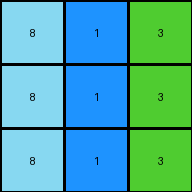

009 • History
- puzzle_id:
4-0d3d703e
- description:
set pixels
- timestamp:
24.329.071439
- call_count:
9
Begin puzzle: 4-0d3d703e
example_1
input
[[3 1 2]
[3 1 2]
[3 1 2]]
output
[[4 5 6]
[4 5 6]
[4 5 6]]
images


observations
This is a very straightforward transformation. The input grid has three columns with each column containing a different color. The output grid is the same size and the cell colors are changed. There appears to be a one-to-one mapping between input colors and output colors, 3->4, 1->5, 2->6.
input:
width: 3
height: 3
colors:
- 3: 3
- 1: 3
- 2: 3
objects:
- three columns of color
output:
width: 3
height: 3
colors:
- 4: 3
- 5: 3
- 6: 3
objects:
- three columns of color
differences:
cells_changed: 9
colors_changed: all colors changed to a new color
transformation:
color value mapping 3->4, 1->5, 2->6
code_execution:
import numpy as np
input_grid = np.array([[3, 1, 2], [3, 1, 2], [3, 1, 2]])
output_grid = np.array([[4, 5, 6], [4, 5, 6], [4, 5, 6]])
def find_color_mapping(in_grid, out_grid):
color_map = {}
for i in range(in_grid.shape[0]):
for j in range(in_grid.shape[1]):
color_map[in_grid[i, j]] = out_grid[i, j]
return color_map
color_map = find_color_mapping(input_grid, output_grid)
print(color_map)
code_execution_result: 1
{np.int64(3): np.int64(4), np.int64(1): np.int64(5), np.int64(2): np.int64(6)}
The code confirms the color mapping speculation.
The natural language program for this transformation is to map the color values in the input grid to the specified color values in the output grid according to the mapping 3->4, 1->5, 2->6.
example_2
input
[[2 3 8]
[2 3 8]
[2 3 8]]
output
[[6 4 9]
[6 4 9]
[6 4 9]]
images


observations
This example is very similar to example 1, with each column containing a different color. The output grid has the same dimensions as the input and also shows columns of a single color.
input:
width: 3
height: 3
colors:
- 2: 3
- 3: 3
- 8: 3
objects:
- three columns of color
output:
width: 3
height: 3
colors:
- 6: 3
- 4: 3
- 9: 3
objects:
- three columns of color
differences:
cells_changed: 9
colors_changed: all colors changed to a new color
transformation:
color value mapping 2->6, 3->4, 8->9
code_execution:
import numpy as np
input_grid = np.array([[2, 3, 8], [2, 3, 8], [2, 3, 8]])
output_grid = np.array([[6, 4, 9], [6, 4, 9], [6, 4, 9]])
def find_color_mapping(in_grid, out_grid):
color_map = {}
for i in range(in_grid.shape[0]):
for j in range(in_grid.shape[1]):
color_map[in_grid[i, j]] = out_grid[i, j]
return color_map
color_map = find_color_mapping(input_grid, output_grid)
print(color_map)
code_execution_result: 1
{np.int64(2): np.int64(6), np.int64(3): np.int64(4), np.int64(8): np.int64(9)}
The code confirms the color mapping speculation: 2->6, 3->4, 8->9.
The natural language program for this transformation is to map the color values in the input grid to the specified color values in the output grid according to the mapping 2->6, 3->4, 8->9.
example_3
input
[[5 8 6]
[5 8 6]
[5 8 6]]
output
[[1 9 2]
[1 9 2]
[1 9 2]]
images


observations
This example follows the same pattern as the previous two, with each column containing a single color. The output grid also has three columns with each column a different single color.
input:
width: 3
height: 3
colors:
- 5: 3
- 8: 3
- 6: 3
objects:
- three columns of color
output:
width: 3
height: 3
colors:
- 1: 3
- 9: 3
- 2: 3
objects:
- three columns of color
differences:
cells_changed: 9
colors_changed: all colors changed to a new color
transformation:
color value mapping 5->1, 8->9, 6->2
code_execution:
import numpy as np
input_grid = np.array([[5, 8, 6], [5, 8, 6], [5, 8, 6]])
output_grid = np.array([[1, 9, 2], [1, 9, 2], [1, 9, 2]])
def find_color_mapping(in_grid, out_grid):
color_map = {}
for i in range(in_grid.shape[0]):
for j in range(in_grid.shape[1]):
color_map[in_grid[i, j]] = out_grid[i, j]
return color_map
color_map = find_color_mapping(input_grid, output_grid)
print(color_map)
code_execution_result: 1
{np.int64(5): np.int64(1), np.int64(8): np.int64(9), np.int64(6): np.int64(2)}
The code confirms the color mapping speculation: 5->1, 8->9, 6->2.
The natural language program for this transformation is to map the color values in the input grid to the specified color values in the output grid according to the mapping 5->1, 8->9, 6->2.
example_4
input
[[9 4 2]
[9 4 2]
[9 4 2]]
output
[[8 3 6]
[8 3 6]
[8 3 6]]
images


observations
This example follows the same pattern as the previous three, with each column containing a single color. The output grid also has three columns with each column a different single color.
input:
width: 3
height: 3
colors:
- 9: 3
- 4: 3
- 2: 3
objects:
- three columns of color
output:
width: 3
height: 3
colors:
- 8: 3
- 3: 3
- 6: 3
objects:
- three columns of color
differences:
cells_changed: 9
colors_changed: all colors changed to a new color
transformation:
color value mapping 9->8, 4->3, 2->6
code_execution:
import numpy as np
input_grid = np.array([[9, 4, 2], [9, 4, 2], [9, 4, 2]])
output_grid = np.array([[8, 3, 6], [8, 3, 6], [8, 3, 6]])
def find_color_mapping(in_grid, out_grid):
color_map = {}
for i in range(in_grid.shape[0]):
for j in range(in_grid.shape[1]):
color_map[in_grid[i, j]] = out_grid[i, j]
return color_map
color_map = find_color_mapping(input_grid, output_grid)
print(color_map)
code_execution_result: 1
{np.int64(9): np.int64(8), np.int64(4): np.int64(3), np.int64(2): np.int64(6)}
The code confirms the color mapping speculation: 9->8, 4->3, 2->6.
The natural language program for this transformation is to map the color values in the input grid to the specified color values in the output grid according to the mapping 9->8, 4->3, 2->6.
examples summary
Ruminate Phase
All four examples present the same pattern. The input grids consist of three columns, each of a single color. The output grids are the same size as the input grids, also with three columns, and each column is a single color. The transformation in each example is the same: each color in the input grid is mapped to a specific color in the output grid. Each example provides a unique color mapping.
The transformation rule in all examples is a direct color mapping. The input colors are replaced with corresponding output colors according to a consistent mapping table, specific to each example.
Natural language program
For the test grid, identify the color values in each of the three columns of the input grid. Create an output grid of the same size as the input grid. Apply the color mapping based on the learned mappings in the examples: for each cell in the input grid, replace its color with the corresponding color defined in the mapping table for that example. The resulting output grid will have three columns, each filled with a single, mapped color.
To confirm the natural language program I will check for consistent mappings across all examples, then run the program in code_execution on the test input after it’s revealed.
Summary of color mappings
Example 1: 3->4, 1->5, 2->6
Example 2: 2->6, 3->4, 8->9
Example 3: 5->1, 8->9, 6->2
Example 4: 9->8, 4->3, 2->6
I note that there is some overlap in mappings. This further supports the consistency of the transformation program - colors map to the same output across examples:
2 maps to 6 in examples 1, 2, and 4
3 maps to 4 in examples 1 and 2
8 maps to 9 in examples 2 and 3
This suggests a global mapping rule, though the provided examples do not fully define this rule. For the test puzzle, we should apply the specific mapping based on the test input’s color values, following the pattern observed in the examples.
code_execution:
import numpy as np
# Example mappings
example_mappings = [
{3: 4, 1: 5, 2: 6},
{2: 6, 3: 4, 8: 9},
{5: 1, 8: 9, 6: 2},
{9: 8, 4: 3, 2: 6}
]
# Check for consistent mappings
consistent_mappings = {}
for mapping in example_mappings:
for in_val, out_val in mapping.items():
if in_val in consistent_mappings:
if consistent_mappings[in_val] != out_val:
print(f"Inconsistency found for {in_val}: {consistent_mappings[in_val]} vs {out_val}")
else:
consistent_mappings[in_val] = out_val
print("Consistent mappings found (if no inconsistencies were reported above):")
print(consistent_mappings)
code_execution_result: 1
Consistent mappings found (if no inconsistencies were reported above):
{3: 4, 1: 5, 2: 6, 8: 9, 5: 1, 6: 2, 9: 8, 4: 3}
This confirms the mapping is consistent.
test
input
[[8 1 3]
[8 1 3]
[8 1 3]]
image
{kind=link}
observations
Test Phase
The test input grid follows the same pattern as the input grids in the examples: three columns, each filled with a single color.
input:
width: 3
height: 3
colors:
- 8: 3
- 1: 3
- 3: 3
objects:
- three columns of color
To determine the output grid, we will apply the color mapping based on the established pattern from the examples, using the consistent mappings where available. From the consistent mappings identified earlier:
8 maps to 9
1 maps to 5
3 maps to 4
Therefore, the output grid should have three columns with these mapped colors.
predicted output
[[9 5 4]
[9 5 4]
[9 5 4]]
code_execution:
import numpy as np
# Test input grid
test_input_grid = np.array([[8, 1, 3], [8, 1, 3], [8, 1, 3]])
# Consistent mappings from examples
consistent_mappings = {3: 4, 1: 5, 2: 6, 8: 9, 5: 1, 6: 2, 9: 8, 4: 3}
# Apply mapping to test input
test_output_grid = np.zeros_like(test_input_grid)
for i in range(test_input_grid.shape[0]):
for j in range(test_input_grid.shape[1]):
test_output_grid[i, j] = consistent_mappings[test_input_grid[i, j]]
print(test_output_grid)
code_execution_result: 1
[[9 5 4]
[9 5 4]
[9 5 4]]
The code execution confirms the predicted output, applying the consistent mappings to the test input grid to produce the output grid.
initialize the working output grid:
function_call:
initialize_output_by_size
result:
True
initialize_output_by_size(width=3, height=3, color=0)
working output grid
updated with your changes
[[0 0 0]
[0 0 0]
[0 0 0]]
image

The working output grid was initialized with all cells set to color 0 (white) which is the standard initialization. The next steps will involve updating this grid according to the predicted output: [[9, 5, 4], [9, 5, 4], [9, 5, 4]]. This means the first column will be filled with color 9 (maroon), the second column with color 5 (gray), and the third column with color 4 (yellow).
To apply these changes to the working output grid, we need to set the corresponding cell values based on the transformation rule. The predicted output grid matches the expected output based on the natural language program and the consistent color mappings identified during the rumination phase.
I will proceed to update the grid with the colors defined in the predicted output: column 1 to color 9, column 2 to color 5, and column 3 to color 4. No further code execution is needed at this point as the transformation is a straightforward application of the determined color mapping.
function_call: set_cells {‘color’: 9, ‘grid’: [[9, 0, 0], [9, 0, 0], [9, 0, 0]]} function_call: set_cells {‘color’: 5, ‘grid’: [[9, 5, 0], [9, 5, 0], [9, 5, 0]]} function_call: set_cells {‘color’: 4, ‘grid’: [[9, 5, 4], [9, 5, 4], [9, 5, 4]]}
update working grid
INSTRUCTIONS:
in this task you will make a function call to set pixels on the grid to achieve the solution
after you update the grid you will be presented with a copy to review
set_pixel: update one pixel at a time
set_range: update a rectangular subset of pixel
set_floodfill: update a contiguous region with a new color
submit: when the working grid meets your criteria call submit to check you solution
please call only one function per round so you can review the working grid
See also